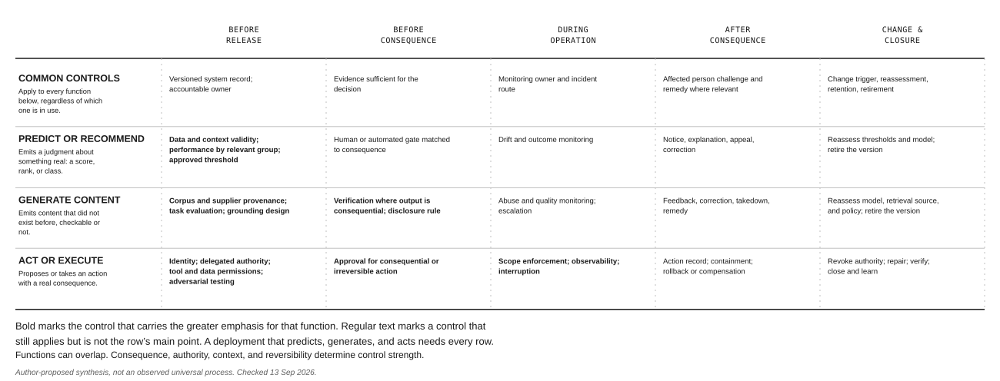
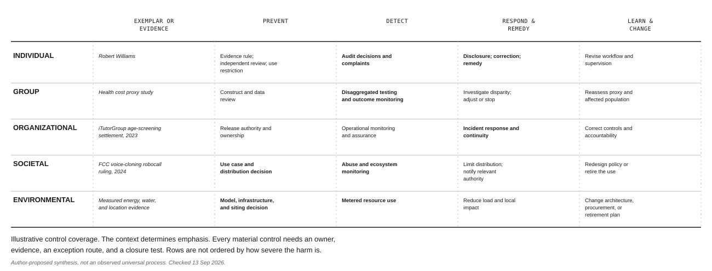

1. What AI Governance Is
On a January morning in 2020, Detroit police officers arrested Robert Williams at his home while his wife and two daughters watched. A facial recognition system had returned his driver’s licence photograph as a candidate against a poor surveillance image. Williams was not the person in the store video.
The error did not travel directly from a model to an arrest. A system returned a candidate. An investigator placed that candidate in a photographic lineup. A witness selected Williams, and a warrant followed. At each handoff, a probabilistic lead gained authority.
This book calls the discipline that governs those handoffs AI governance.
AI governance is how an organization decides what its AI systems may do, establishes that they do it, and makes clear who answers when they do not.
Governance breaks into three tasks, and each is its own body of work. Deciding what a system may do covers which populations it may touch, what it may act on, and where the boundaries sit. Establishing that it does it covers testing, monitoring, and the evidence that would satisfy someone who did not build it. Naming who answers covers assigning an accountable person for each decision and keeping the record that shows they made it. A programme missing any one task is not partially effective. It fails in a specific, predictable way.
What you will be able to do
- Distinguish AI from conventional software in the terms that determine how it must be governed
- Explain why behaviour learned from data produces problems that behaviour specified in code does not
- Identify harms at five levels and name a documented instance of each
- Describe what a stated principle commits an organization to, and what it leaves open
- Explain why technical excellence in a model does not by itself produce a safe system
1.1 Defining AI for governance purposes
Definitions of artificial intelligence are contested, and for most purposes the argument is unproductive. For governance the argument matters, because the definition decides what falls inside your programme and what does not.
Two definitions carry weight because regulators use them. The United States National Institute of Standards and Technology describes an AI system as an engineered system that, for a given set of objectives, generates outputs such as predictions, recommendations, or decisions that influence real or virtual environments, operating with varying levels of autonomy. The European Union’s AI Act describes a machine-based system designed to operate with varying levels of autonomy, which may exhibit adaptiveness after deployment, and which infers from the input it receives how to generate outputs.
Strip both to the operative element and you get something close, though not identical, in each. A system operating with some degree of autonomy generates its outputs by inference instead of by executing rules a person specified for the case at hand. What actually governs scope is that regulator’s own current definition, whether it is NIST’s, the EU AI Act’s, or another’s. Neither reduces cleanly to a single yes-or-no test, and both leave room for judgment at the edges. A rule-based or expert system can still fall inside one of them depending on how it was engineered. What follows is a diagnostic heuristic for exactly those edges, not a substitute for the statutory or standards text a compliance determination has to rest on.
Treat a component as AI, for governance purposes, when it infers how to produce its output rather than executing a rule a person fully specified for that case.
That gives you a usable starting question, not a complete test. Did somebody specify what to do in this situation, or did the system work it out from patterns in data? A component that infers is squarely within scope. A component that only executes specified rules can still belong inside the governance boundary, because it allocates consequential work, controls which cases reach a model, or carries a model’s output to an affected person. Ask both questions. Does the component infer from data. Does it exercise authority, shape access, or transmit a consequential result to someone affected. A yes to either keeps the component in the system map. A no to both is a reason to check the actual governing definition, not a reason to stop looking.
The test fails in two ways, and both are worth knowing before you rely on it.
It can return both answers at once. A fraud system applies twelve hand-written rules and passes the transactions no rule catches to a learned model. The rules are specified and the model infers. It is one product, with one interface and one owner. Scope only the model and you govern the minority of cases while ignoring the rules that decide which cases reach it, and those rules encode judgments about who is suspicious.
It can also be impossible to run. A purchased scheduling tool describes its prioritization as configurable, and during implementation an engineer notices that the priorities shift over time in ways the configuration does not explain. Nobody in the buying organization decided to deploy AI. They may have anyway, and that they cannot tell is itself the finding.
Neither case is a flaw in the definition. The definition tells you whether a component is AI. It does not tell you where governance should draw its boundary around the system that contains it. That boundary is the more consequential question.
Worked exercise: scoping the scheduling tool
Apply the test to the purchased scheduling tool from earlier, on a Tuesday morning when it is your problem, not a paragraph. Work through it in order and produce a short written record, not only an answer in your head, since the record is what a reviewer, and a future version of you, can actually check later.
- Components. List every distinct function the tool performs, here priority scoring, schedule assembly, and notification to staff, instead of treating “the scheduling tool” as one indivisible thing.
- Inference versus rule, per component. For each one, ask this chapter’s diagnostic question. Does it infer from patterns, or execute a specified rule? Record the answer and the evidence for it, not just a guess; if the vendor’s own documentation cannot answer this, that gap is itself a finding.
- People and process around each component. Name who configures it, who can override it, and who would notice if its behavior changed.
- Affected parties. Name who is affected by a scheduling decision this tool makes or shapes, and how they would find out something went wrong.
- Decisions and actions. Separate what the tool merely recommends from what it does on its own authority.
- Owners. Name a specific accountable person for the tool as a whole and, if they differ, for each inferring component.
- Evidence available now. State what you can currently verify (vendor documentation, an engineer’s observation, a configuration export) versus what you cannot yet verify.
- Uncertainty and provisional scope. Where the inference-versus-rule answer is genuinely unclear, as with the drifting configuration this chapter already described, say so explicitly and assign the component a provisional, more cautious scope instead of defaulting it out of governance until the uncertainty is resolved.
- Escalation. Name who decides the provisional cases and by when.
The worked record below applies the method to the scheduling tool. It is a hypothetical, and unknown facts stay unknown rather than guessed.
| Field | Worked entry |
|---|---|
| Components | Priority scoring, schedule assembly, and staff notification are recorded separately. |
| Inference versus rule, per component | Priority scoring is provisionally treated as inferential, because priorities change in a way the configuration does not explain. Schedule assembly stays unresolved until the vendor explains whether it optimizes from examples or applies stated constraints. Notification appears rule based, since it sends a message after a schedule event. |
| People and process around each component | The service manager configures priorities. Scheduling staff review the assembled schedule. The vendor maintains the product. Who can override a priority and who monitors change are not yet known, and both are evidence gaps. |
| Affected parties | Staff members receive shifts. Managers rely on coverage. Patients or customers may feel the effect if the change alters service capacity. The record states how each group can report a problem. |
| Decisions and actions | Priority scoring recommends an order. Schedule assembly may allocate work. Notification communicates the allocation. The buyer must verify whether any component can change a schedule without human approval. |
| Owners | The service director owns the use case. The technology owner answers for configuration and supplier evidence. A named operations manager answers for overrides and complaints, once names replace these role labels. |
| Evidence available now | The buyer holds the contract, a configuration export, the user guide, the change log, and scheduling staff’s own observations. It does not yet hold a model description, decision logic, or validation evidence. |
| Uncertainty and provisional scope | Priority scoring and schedule assembly stay inside the governance boundary until the uncertainty is resolved. Notification stays in the system record too, because it carries the decision to an affected person even where it is not itself AI. |
| Escalation | The technology owner requests written evidence from the supplier. The governance lead sets a date to decide the final scope. The tool does not expand past a controlled pilot before that decision is recorded. |
This record does not answer every governance question the tool will eventually raise, but it gives the organization something concrete to work from instead of a guess.
The output is a reviewable record with these nine fields filled in. It is not a paragraph concluding “yes” or “no.” A system that resists a clean answer at step 2 is exactly the case this chapter’s scope test warns is possible. The record above is what lets governance proceed anyway instead of stalling on the definition.
1.2 How machine learning works
You do not need to build models to govern them. You do need enough of the mechanism to know what can go wrong, because the failure modes follow from how the thing works.
Much of deployed AI is built by machine learning, and supervised learning is the clearest place to start. The supervised pattern is consistent. A developer assembles examples where the answer is already known. The algorithm adjusts internal numbers, called parameters, until the system’s outputs match the known answers as closely as possible. The trained system is then applied to cases it has not seen.
Take fraud detection at a bank. The bank assembles several million historical transactions, each labelled as legitimate or fraudulent according to what was eventually discovered. The algorithm searches for combinations of features that separate the two, among them unusual hour, unusual location, unusual amount, and unusual sequence following a recent password change. It settles on parameter values that make the separation as accurate as it can on those examples. The result scores new transactions.
Three consequences follow, and governance exists because of them.
The first is that patterns learned from data carry the history in that data. The model has no concept of fraud. It has a statistical relationship between features and a label, and the label came from what human investigators found. If those investigators historically scrutinized some customers more closely than others, they found more fraud among them, and the model learns that those customers are riskier. It has learned the investigation pattern and it will reproduce it. Nobody wrote a discriminatory rule. The discrimination is in the parameters, which is a much harder place to find it.
The second is that learned behaviour can be difficult to explain. A model with millions of parameters produces its output through arithmetic across all of them, and the available explanation depends on the model, the specific question asked, the evidence recorded about the decision, and the fidelity the situation actually requires. A global account of how the model behaves in general, a local account of why this one output occurred, and a causal account of what would have changed the outcome are three different things. A system can support some of them without supporting all, which collides directly with legal requirements to explain automated decisions.
The third is that model performance can change even when the model’s code and parameters do not. A new fraud technique, a new payment method, a shift in customer population, or a change in the surrounding workflow can change the relationship between inputs and outcomes without anyone touching the model. Conventional software can change behaviour too, when its data, configuration, dependencies, or environment change, but a learned model depends on that relationship more directly. The governance task is to identify which relationships the learned performance depends on, set a deployment baseline, and monitor whether those relationships and outcomes still hold.
Three other paradigms appear in practice. Unsupervised learning finds structure in data with no labels, which is useful for detecting anomalies and dangerous when someone treats a cluster as a category with meaning it was never given. Semi-supervised learning trains on a small labelled set together with a much larger unlabelled one, which is common wherever labelling is expensive and which propagates whatever the small set got wrong across all of it. Reinforcement learning trains by acting and receiving feedback, which produces systems that optimize what they are scored on with more literalism than anyone intended.
A fourth, self-supervised learning, is how most foundation models begin, and it is worth separating because it changes what there is to govern at that stage. The labels are manufactured from the data itself. A word is withheld and the system is scored on predicting it, across a corpus large enough that no one has read it. Nothing here corresponds to the fraud investigators whose judgments the supervised model inherited, and there is no externally supplied ground-truth label set of the kind a supervised system’s audit would examine. That does not put pretraining outside audit entirely. The corpus itself, its provenance and filtering, the training objective, the sampling procedure, and how targets were constructed from the raw data all remain checkable, and a governance review that stops at “no labels” misses exactly the questions that stage actually raises. But pretraining is rarely the last stage. Most deployed generative systems go on to supervised instruction tuning, human preference data, reinforcement learning, or synthetic evaluation, and each of those later stages reintroduces exactly the label, annotator, and reward risks that pretraining lacked. Governance has to trace each stage on its own terms. These are corpus provenance for pretraining, label and annotator quality for the supervised stages, and reward design for anything trained on human preference. An organization that fine-tunes a foundation model inherits a pretraining history it cannot inspect, and it also owns whatever its own fine-tuning stage adds.
1.3 Three kinds of system
AI systems fall into three kinds, and governance treats each one differently at every stage. These are overlapping governance lenses applied to what a system is actually doing in a given moment, not mutually exclusive technical categories a system belongs to permanently. A generative model can produce a checkable score, a predictive component can emit text, and a real deployment routinely combines all three, as the paragraph closing this section already shows. Apply the lens that matches the function actually in use, and expect most real systems to need more than one.
The first kind are predictive systems, which analyze what exists to produce a judgment about it. Will this borrower default. Does this scan show disease. Is this transaction fraudulent. The output is a number or a category attached to something real, and there is usually, eventually, a fact of the matter about whether it was right. Governance for these systems has decades of precedent in credit scoring and actuarial practice, and its central concerns are accuracy and whether accuracy holds across groups.
Generative systems, by contrast, produce content that did not exist before. Text, images, audio, code. Some of that output is judged against a purpose, not a single correct answer. A stylistic rewrite or a fictional image has no fact of the matter to check it against. Much of it does. A factual claim, a calculation, a citation, or a block of code has a checkable truth or correctness condition, whether or not the system that produced it was built to track one. Their best-known failure is fabrication, a normal property of how these systems work, not an occasional defect. You will meet it as hallucination in most writing and vendor documentation, and as confabulation in NIST’s generative AI profile. Fabrication is the more accurate term. Hallucination suggests a perceptual malfunction, and nothing has malfunctioned. A language model is trained to produce text that continues plausibly, not text that is true, so fluency and confidence carry no information about accuracy. A fabricated citation comes from exactly the same mechanism as a correct one and arrives with exactly the same fluency. People trust these systems most in exactly the checkable situations where trust should be earned by verification instead.
The third kind, agentic systems, take actions. They call tools, write files, send messages, execute transactions, and invoke other systems, pursuing a goal across many steps with a person supervising loosely or not at all. The governance question shifts. For a predictive or generative system you ask whether the output was right. For an agent you ask what it did, under whose authority, and whether it can be undone. Reviewing every action before it executes becomes impractical at the speed and volume these systems typically operate at. Control moves substantially, though not entirely, to what the agent is permitted to touch and whether you can stop it, alongside whatever review the deployment’s speed still allows.
Most real deployments are combinations. A customer service system retrieves records with a predictive component, drafts a reply with a generative one, and issues a refund with an agentic one. Governing it means governing all three.
Figure 1.1 compares the control emphasis each function creates across five stages, before release, before consequence, during operation, after consequence, and change and closure. It does not classify an entire product. A deployment that predicts, generates, and acts must apply every row that describes what it does.

Read each row across, not down. The top row lists controls every function shares, a versioned system record, an accountable owner, and a route from evidence to remedy, regardless of which function is in use. Predictive functions lean hardest on the gate before a judgment is acted on, backed by data and threshold review earlier and by monitoring and appeal after. Generative functions lean hardest on provenance and verification before release and before consequence, because a fabricated or ungrounded output is cheapest to stop early. Agentic functions, in the bottom row, carry the heaviest and most concentrated controls, spanning identity, approval, and runtime enforcement, because by the time there is an output to inspect the action has often already occurred. Defence in depth, not one heavier gate, is the pattern the table is teaching.
In an organization deploying only predictive models, the bottom row is theoretical. Most organizations are one procurement away from it.
1.4 Narrow AI and the AGI question
Every AI system in use today is narrow. It does the task it was built for and fails, often badly, outside that task. A fraud model cannot write an email. A language model cannot detect fraud. Bounded capability can be tested and monitored, and that is what makes it governable.
Artificial general intelligence means a system that matches human capability across almost any task, not one. No such system exists yet. Experts disagree, often sharply, about whether one will exist and when, and published forecasts range from a few years away to never. No governance decision should rest on any single one of those forecasts.
That disagreement does not make today’s most capable models beside the point. The largest general purpose models already carry legal duties tied to their scale. The EU AI Act requires documentation from every general purpose model and adds evaluation, incident reporting, and cybersecurity duties for models judged to pose systemic risk. California’s SB 53 and New York’s RAISE Act impose similar duties on frontier model developers in the United States.
For governance, the useful questions are practical. What can this model actually do. Which of those capabilities has the organization turned on. What limits has it set. What does the organization know about how the model was built and tested, and what did the developer disclose versus what did the organization have to find out itself. What happens when the model changes.
1.5 AI as socio-technical systems
The most important idea in this chapter is that the model is not the unit of concern.
An AI system is a socio-technical system whose behaviour is produced jointly by the technology and by the people, processes, and incentives around it, and cannot be predicted from either alone.
A model does not deny anyone a loan. An institution denies the loan, using a model, inside a process, under commercial pressure, subject to law, staffed by people with quotas and queues. Change any of those and the same model produces different outcomes for real people.
Take FAIRLEND, Meridian Financial’s credit model. Suppose it is excellent by every technical measure, accurate, calibrated, and tested across demographic groups, with differences within tolerance. Now place it in an organization.
The threshold at which a score becomes a denial was not chosen by the model. Someone chose it, balancing losses from bad loans against revenue from good ones, and that choice determines who is refused. Loan officers can override, and whether they do depends on whether overriding requires a written justification that a supervisor reviews. The appeals process exists, and whether it is a real check depends on whether the reviewer sees the application afresh or sees the score first. Marketing determines who applies at all, so the population the model sees is already shaped before the model does anything. And the applicant, at the end, receives a letter listing principal reasons for denial in language that satisfies a regulation without conveying anything actionable.
The model is one component in that account and not the one most likely to fail. That is why governance spends as much time on processes, roles, and records as on models, and why technical excellence does not settle the question. A well-built model in a badly designed process produces harm efficiently.
1.6 Governance, ethics, and compliance
Ethics, compliance, and governance overlap, but they ask different questions. Ethics asks what an organization ought to do and whose interests should count. Compliance asks what an applicable rule requires in a particular jurisdiction and use. Governance turns those judgments and duties into decision rights, controls, evidence, and accountability.
FAIRLEND makes the difference concrete. The bank must choose how it will evaluate fairness when several defensible measures point in different directions. Ethical reasoning helps the bank decide which interests and errors deserve weight. Compliance identifies the rules that constrain the choice. Governance names who may decide, what evidence that person must review, which threshold is approved, how outcomes are monitored, and what happens when the result breaches the approved limit.
A published principle provides direction. It does not prove that the organization can enforce the principle. A committee has a working governance mechanism when it can impose conditions, delay a release, or stop a deployment and when its decision is recorded. The power to say no is still only one mechanism. Oversight, assurance, accountability, remedy, and review remain separate work.
This book proceeds from three commitments. People affected by an automated decision have interests independent of the deploying organization. An unexplained disparity deserves investigation. Someone with real authority must answer for what a system does. The legal meaning and practical application of those commitments can be contested even when the commitments themselves are accepted.
Governance does not make contested choices disappear. It makes the choice explicit, assigns it to someone with authority, records the reasons and evidence, and creates a way to test and revisit the result.
1.7 Why AI requires its own governance
Organizations already govern software. They have change control, testing standards, access management, and audit, and conventional software can itself be opaque, autonomous, data-dependent, variable in behavior, and capable of surprising interactions, so none of the five properties below is exclusive to AI. What AI does is intensify each one often enough, and in a specific enough pattern, that the existing controls need testing before anyone assumes they transfer unchanged. Some will transfer, some will need adaptation, and a few gaps are genuinely new. Start from the controls already in place, and check each of the five against them.
The first is opacity. Conventional software is complex but usually inspectable; a developer can trace what happened, though a large enough codebase or a sufficiently emergent interaction can defeat that too. A learned model with millions of parameters is harder to trace in a different way. Debugging leans more on statistics than on reading, testing cannot enumerate the full input space, and the accountability practice of asking someone to explain a decision can run into a system where no single complete explanation exists, though a partial, evidence-based explanation frequently does.
The second is autonomy at speed. Conventional systems typically support a human decision. AI systems increasingly make the decision itself, at volumes that make individual review arithmetically impossible. High-volume conventional automation, such as a rules engine that auto-denies a transaction, raises the same review problem, but AI systems reach that volume more routinely and with logic nobody wrote line by line. A platform assessing millions of items a day cannot have a person look at each one. Governance must therefore distinguish oversight that reviews each decision from oversight that watches the aggregate and can intervene, and be honest about which one it has.
Agentic systems take this to its limit. When a system acts instead of recommending, review before the fact becomes impractical at the speed and volume involved, often leaving no realistic interval between the output and the consequence in which a person could meaningfully intervene. Control has to move substantially upstream, to what the system is permitted to do at all, and downstream, to whether the action can be reversed. Delegated authority, constrained permissions, approval before consequential action, runtime interruption, and recovery are what that shift looks like in practice, as Figure 1.1 showed. Monitoring after the action remains necessary, but it cannot substitute for a boundary that should have prevented the action.
The third is data dependency. Change the code and conventional software usually changes, and changing its configuration, dependencies, or environment can move it too. Change the data and a learned model’s behaviour can change with the code, configuration, and dependencies all untouched, because for a trained system the data is where much of the actual logic lives. This puts data provenance, quality, and representativeness inside the governance boundary alongside code and configuration, and it means a system can be altered by a pipeline change nobody flagged as a change.
It also means a system can change without anything changing at all, if it is moved. MEDASSIST predicts clinical deterioration and was trained at an academic medical centre on that centre’s patients. Deployed unchanged to a community hospital, it meets a different population, older on average, with more comorbidity, different referral patterns, and different reasons for being admitted at all. Nothing about the model has altered. What it is being asked to do has. A system whose accuracy is a property of the population it was trained on does not carry that accuracy with it, and the organisation receiving it has usually been told only the first number.
The fourth is behaviour that must be measured, not assumed. Many machine learning systems produce scores or outputs learned from statistical relationships in data instead of specified by a programmer, and that behaviour can vary with model version, configuration, retrieved context, or sampling settings, in ways conventional software’s behaviour usually does not. Governance should not assume this variability, or assume the system is deterministic either. It should establish, for the deployed configuration, whether the same input reliably produces the same output, how any uncertainty is represented, which thresholds turn a score into a decision, and who set them. That threshold decision is a value judgment about which errors are more tolerable, and it is usually made by whoever configured the system rather than by anyone accountable for the consequence.
The fifth is emergent behaviour. Conventional software mostly does what it was built to do, and most deviations are bugs, though a complex enough system can still surprise its own designers through an interaction nobody anticipated. Learned systems exhibit behaviours nobody designed far more routinely. Sometimes that is capability. Sometimes a recommender optimizing engagement discovers that outrage is engaging, and no one wrote that rule or intended it. Testing against a specification cannot find behaviour the specification never contemplated.
1.8 What AI harms look like
Harm from AI is often discussed abstractly. It is more useful to see it at five levels, each with a documented instance, because the levels call for different governance responses.
Individuals absorb harm as a specific event in a specific life. Robert Williams was arrested in front of his children (case detail below). His case is not unique. NIST’s own demographic testing of face recognition algorithms has documented higher false-positive rates for some algorithms against some demographic groups than others. The small set of publicly documented wrongful arrests attributed to facial recognition matching in the United States has to date involved Black men more often than their share of the population would predict, a pattern consistent with, though not proof of, that documented accuracy differential. Results vary by algorithm, task, and application, and NIST’s own findings should be read at that resolution, not as a single uniform performance gap.
Groups absorb harm as a pattern that no individual can see. Researchers examining an algorithm used across the United States health system to identify patients for extra care found that it systematically underestimated the needs of Black patients. The mechanism deserves attention because it is so ordinary. The algorithm predicted healthcare costs as a proxy for healthcare need. Cost is a reasonable-sounding proxy and a bad one, because unequal access means less money is spent on patients who face more barriers, not on patients who are healthier. The algorithm read lower spending as lower need. It worked exactly as designed. No variable named race, and race did not need to be named.
Organizations absorb harm as consequence for the deploying institution. Amazon built an experimental recruiting tool that, according to investigative reporting, learned to penalize résumés indicating the applicant was a woman. Amazon says the tool was never used to evaluate candidates, and no public enforcement record confirms or disputes the reporting either way. A clearer case comes from the EEOC’s 2023 settlement with iTutorGroup. It names the parties, states a specific allegation that the company’s application software automatically rejected older applicants, and closes with a settlement of $365,000 and a public consent decree. Whether iTutorGroup’s screening tool used machine learning or a simpler automated rule was never confirmed. Governance exposure from a hiring tool does not wait for that confirmation, as section 1.1’s scope test already showed. Either way, the reputational and legal cost of a governance failure can outlive the system that caused it.
Society absorbs harm as damage to shared conditions. Generative systems have reduced the cost of producing convincing false content to nearly zero, at a moment when the institutions for establishing what is true were already under strain. In February 2024 the Federal Communications Commission confirmed that the Telephone Consumer Protection Act’s restriction on artificial or prerecorded voices covers voices generated by AI. The ruling does not prohibit every synthetic voice. It shows a new technical capability entering an existing distribution rule, with consent, identification, and enforcement attached to the call rather than to the model that produced it. No single output is the harm. The aggregate is.
The environment absorbs harm as consumption. Training and serving large models requires energy and water, concentrated in specific places near the data centers that do the work. Multiple industry and research estimates through 2026 have found aggregate demand growth outpacing efficiency gains at the sector level, though the exact figures are method- and boundary-dependent. They change fast enough that a specific number would be stale before this page is read, so none is fixed here.
Agentic systems do not add a sixth level. They change the shape of harm at every one of the five, because the output is an action rather than a judgment, and an action can shorten the path to a real consequence. A predictive score can trigger an automatic denial with no person in the loop, and a generative output can be published or copied into a record before anyone reviews it. An agentic action can be stopped the same way, by an approval gate, an allowlist, a transaction limit, or a human confirmation step, when the deployment actually includes one. For each action, governance should ask whether it needs approval, whether it may execute within a bounded authority, how it is monitored and interrupted, and what recovery or compensation follows when reversal is impossible. Fewer documented agentic-harm cases exist than the harms above mainly because these systems are newer, not because the risk is smaller. TALENTSCREEN supplies the shape. A scheduling component that sends rejection messages to candidates without review does not produce a disputable decision. It produces a message the candidate has already read. The missing gate before that message was the control failure.
Figure 1.2 connects each harm level to the controls that reach it, from prevention through remedy and learning. The rows are prompts for analysis, not a ranking of whose harm matters most.

Read each row in full. No harm level reduces to a single stage. Individual harm is caught most distinctively by auditing decisions and complaints, as Robert Williams’ case showed; group harm surfaces through disaggregated testing, which sees a pattern no individual case reveals; and organizational harm is answered through incident response once a failure surfaces. Societal and environmental harm are prevented earliest, at the decision to build and the choice of model and infrastructure, because that is where their largest effects are set, and both still need active monitoring afterward.
1.9 Principles, and what they leave open
Most organizations that publish AI principles converge on a familiar set. The convergence is real and it is also the least useful thing about them. Principles matter for what they commit you to when they conflict, so each is worth stating alongside the tension it contains.
Fairness asks that a system not produce unjustified disparities between groups of people. Made precise, that turns out to mean several different things. One reading is that the proportion of people selected should be similar across groups. A second is that among the people who would in fact have succeeded, the proportion the system identifies should be similar across groups. A third is that a stated probability should mean the same thing whichever group the person belongs to. Each is a reasonable account of the same word, each can be measured, and except in special circumstances they cannot all hold at once. What follows for governance is that fairness is a choice among defensible definitions rather than a property a system either has or lacks, and that the choice is a judgment about values, not a technical finding. It also follows that someone should be identifiable as having made it.
Safety and reliability concern whether a system works as intended and fails in ways somebody anticipated, which in practice means knowing what it does at the edges of its competence and what happens when it exceeds them. The tension is that anticipating a failure mode requires having thought of it, and emergent behaviour is by definition what nobody listed.
Privacy covers two demands. A system must neither expose what a person disclosed for another purpose nor derive what they chose not to disclose, the second of which is the newer problem since a model can often infer a sensitive attribute from behaviour that seems unrelated to it. The tension here is direct. minimization asks for less data, model performance asks for more, and inference lets a system derive what was withheld.
Transparency requires that a person know when an AI system shaped a decision about them and be able to find out, in terms they can act on, what drove it, calibrated to who is asking. An operator may need the system’s limits and its uncertainty. An affected person may need the principal factors, a correction route, and a way to contest the result. An auditor may need the data, version, threshold, and decision records behind it. The tension is real but not universal. Accuracy and interpretability conflict in some tasks, and an interpretable model matches a complex one’s performance in others, so transparency’s cost, where it exists at all, falls unevenly rather than following a fixed rule. Governance should test whether the explanation actually offered is faithful and actionable rather than assume that accuracy always rises as explicability falls.
Accountability means that a named person or function answers for what a system does, which presupposes having had the authority to prevent it. The tension is that a modern AI system involves a model developer, a platform, an integrator, a deploying organization, and an operator, and each can point at another.
Human oversight requires that people be able to understand what a system is doing, watch it while it runs, and stop it. The tension is that oversight which reviews every decision does not scale, and oversight that does scale is easily satisfied by a person clicking approve. Where the system acts instead of recommending, the word means something different again. It becomes not review of an output but a boundary on what the system may do and a tested ability to halt it partway.
A principle that has not been reduced to a requirement someone can test is a statement of intent, not a control. The chapters ahead turn each principle into one.
Case in focus: the arrest
REAL CASE · Documented
Detroit police were investigating the theft of watches from a shop. They had security footage. An analyst ran a still from that footage through a facial recognition system against a database of state driver’s licence photographs. The system returned candidates. Robert Williams’ licence photograph was among them.
That is the entire technical contribution. Everything after it was process.
The candidate photograph was placed in a photo lineup shown to a witness. That witness had not seen the theft; she had reviewed the same security footage. She selected Williams. On that basis a warrant was issued, and in January 2020 Williams was arrested at his home in Farmington Hills, Michigan, and held for thirty hours before release. During questioning, a detective remarked that the computer must have gotten it wrong, according to Williams’ own account. The prosecutor’s office later withdrew the charge and the case became one of the first publicly documented wrongful arrests attributed to a facial recognition match in the United States.
Three controls were missing, and the one that looks like a rule was actually a failure to enforce one.
Detroit’s own policy already stated that a facial recognition result was only an investigative lead and was not a positive identification or probable cause. Writing that rule changed nothing here, because the workflow did not enforce it. The lead was allowed to become a photo lineup, and the lineup was then allowed to supply the identification evidence behind a warrant, with nothing independent of the original image standing behind either step.
There was no accuracy requirement matched to the conditions of use. Published evaluation by NIST had already established that face recognition algorithms varied substantially in demographic differentials, with higher false positive rates for some groups than others depending on the algorithm. That evidence existed. It was not connected to a policy about what the system could be used for.
And there was no disclosure. Williams learned that software had been involved only because a detective told him during questioning. Had the interview gone differently, he would have had no way to know what to contest.
What would have changed the outcome is not a stronger version of the rule Detroit already had. It is a control on the workflow. That control requires independent evidence, unrelated to the image the algorithm processed, before a lineup or a warrant request goes forward; disclosure that facial recognition was used at any stage; and a supervisor who verifies both conditions before the case proceeds. That is what the 2024 settlement added, and it is a governance control on the process, not an improvement to the technology.
Summary
Artificial intelligence, for governance purposes, is a system that infers how to produce its output rather than following rules a person specified. A specific regulator’s own definition governs for that regulator’s own rule. Because behaviour is learned from data, it carries whatever the data recorded, including patterns of past treatment nobody would have written as a rule. Because behaviour is learned, it can be difficult to explain, and how difficult depends on the model, the question, and the evidence available. And because behaviour depends in part on the world resembling the training data, it can degrade while the code sits unchanged.
Three overlapping lenses, not exclusive categories, need distinguishing. Predictive functions produce judgments and can usually be checked against outcomes. Generative functions produce content. Some of that content has no single correct answer to check it against, but a factual claim, a calculation, a citation, or code frequently does. Fabrication is a property of how these systems work rather than a defect confined to the uncheckable cases. Agentic functions produce actions, which moves the governing question from whether the output was right to what was done, under whose authority, and whether it can be undone. A real system routinely combines more than one function, and the governing lens follows the function actually in use.
The model is not the unit of concern. Thresholds, override practices, appeal routes, incentives, and disclosure decide what a model does to people, and most of them are set by someone other than the people who built it. This is why governance is a discipline about institutions that happens to involve technology.
Harm arrives at five levels and each needs a control at a different stage. Principles name the commitments, and every one of them contains a tension that only becomes visible when you try to turn it into something testable.
Review questions
COMPREHENSION
An organization publishes a set of AI principles, convenes an ethics advisory board that meets quarterly, and has never declined to deploy a system. Using the distinction in 1.6, say what the organization has and what it lacks, and name the single question that would settle it.
Explain why a generative system’s confidence in an output carries no information about whether the output is accurate. What follows for how such systems should be deployed?
APPLIED
A hospital’s diagnostic support tool performs at high accuracy in validation. Eighteen months after deployment, clinicians report it is missing cases it used to catch. Nobody has modified the system. Give three distinct explanations consistent with these facts, and say what evidence would distinguish them.
A company states publicly that its AI is fair, and supports this with testing showing equal accuracy across demographic groups. An advocacy organization responds that the system is unfair because selection rates differ substantially by group. Both are describing the same system correctly. Explain how, and state what the company should have published instead.
SPOT THE RISK
- A retailer deploys a system that reviews customer service conversations, drafts a resolution, and for refunds below a threshold issues the refund automatically. It was tested on twelve months of historical conversations and achieved high agreement with what human agents had decided. Success is measured by resolution time and refund cost. A supervisor samples ten conversations a week. Identify at least five governance concerns, and for each say which of the three kinds of system it arises from.
COMPARE AND DECIDE
- A lender must choose between a model achieving 84 percent accuracy whose decisions can be explained to an applicant in terms they can act on, and one achieving 91 percent accuracy whose decisions cannot. The more accurate model would approve more applicants who repay and decline more who default. What should inform the choice, who should make it, and what would you need to know that is not stated here?
RUNNING CASE
FAIRLENDMeridian’s model is technically excellent by every measure available. Using the socio-technical account in 1.5, identify four decisions outside the model that determine what it does to applicants. For each, name who in the bank makes it and what would make it visible to governance.
Nothing so far has said what the law actually requires. That is a separate question, with its own answer, and it changes fast enough that any summary of it needs a date attached.